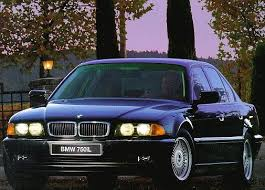

Hobbies:
- Cars
- Music
- Walking


Hi! I'm Alex Kozyr. I live in Ballinter, County Dublin and was born in 6 May 2003. I am an only child and am also half-Russian through my father. As of now, I am completing my 4th Year of College in Technological University Dublin - Tallaght Campus. I chose to do computing in college not only because of money and opportunities but because I always had something of an interest in the mechanism behind computers, mainly software. Overall I would describe my self as a passionate learner who is always willing to learn new skills and programming languages. In addition I consider myself a team player which should be exemplified by my numerous college projects below. As well as that I am almost always the first in any project to be spurred into action.
2022-ongoing
2016-2022
2008-2016
4th Year
GPA: TBD
3rd Year
GPA: 2.63
2nd Year
GPA: 3.13
This is an ongoing project for which I intend to create a Car Dealership app using Django. As I am writing this the functionality is basic with the ability to place and ad for a car and a search engine. More will be added soon, but below is a view of what it looks like so far
My three teammates and I needed to do create an app which allows users to locate the nearest hospital among other services such as personal helpers and chatbots.
Me and my teammates were tasked with analysing a dataset for which we chose the topic of housing in Ireland. Once done we had to present our findings in front of the lecturer.
Similar to the previous project, me and my teammate made a Django project but this time focused on selling pet supplies. Having sorted out my previous laptop error, this project was far easier despite lacking a teammate.
My partner and I had to use Django to make a shop based around the sale of plants. This was also tense as my laptop had some error which made pushing certain pieces of code impossible.
2024-ongoing
My role in this job is a personal shopper and delivery driver. I receive notifications through my phone about my next job such as which Dunnes Stores I am meant to go to, when its expected to be delivered by and (once i get to the shop) the items to by and the house I will be delivering to. The pros of this job are that I have learned plenty of people skills and time management. The downside is that as a job that requires people to make orders, I would often spend a long time not working.
2019-2019
This was for a very brief time back in my Transition Year in school. Southside Partnership is a service based in Ballybrack that helps underprivileged children develop necessary skills. My job was to help disadvantaged children with any needs they may have during class hours. As previously stated, it was for a brief time but it helped me gain a better understanding of what work would be like in the future.